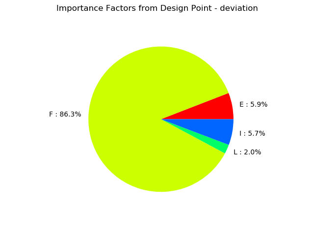
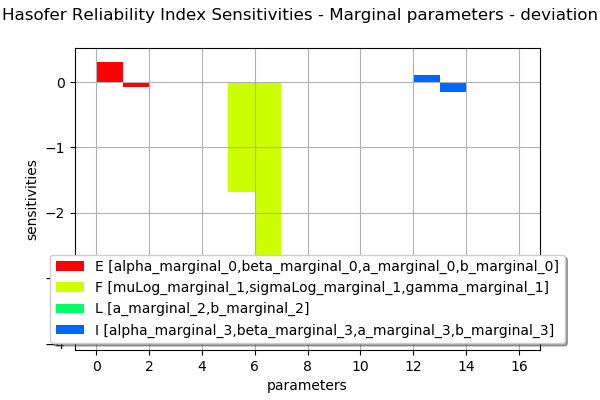
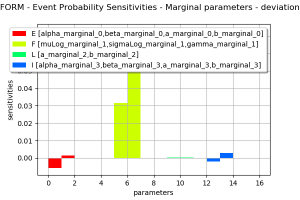
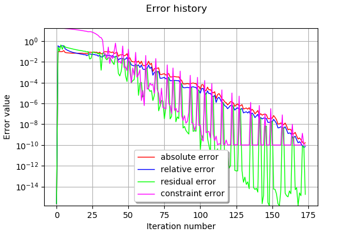

Estimate a probability with FORM¶
In this example we estimate a failure probability with the FORM algorithm on the cantilever beam example. More precisely, we show how to use the associated results:
the design point in both physical and standard space,
the probability estimation according to the FORM approximation, and the following SORM ones: Tvedt, Hohen-Bichler and Breitung,
the Hasofer reliability index and the generalized ones evaluated from the Breitung, Tvedt and Hohen-Bichler approximations,
the importance factors defined as the normalized director factors of the design point in the -space
the sensitivity factors of the Hasofer reliability index and the FORM probability.
the coordinates of the mean point in the standard event space.
The coordinates of the mean point in the standard event space is:
where is the spheric univariate distribution of the standard space and is the reliability index.
Introduction¶
Let us consider the analytical example of a cantilever beam with Young modulus E, length L and section modulus I.
One end of the cantilever beam is built in a wall and we apply a concentrated bending load F at the other end of the beam, resulting in a deviation:
Failure occurs when the beam deviation is too large:
Four independent random variables are considered:
E: Young’s modulus [Pa]
F: load [N]
L: length [m]
I: section [m^4]
Stochastic model (simplified model, no units):
E ~ Beta(0.93, 2.27, 2.8e7, 4.8e7)
F ~ LogNormal(30000, 9000, 15000)
L ~ Uniform(250, 260)
I ~ Beta(2.5, 1.5, 3.1e2, 4.5e2)
[1]:
from __future__ import print_function
import openturns as ot
Create the marginal distributions of the parameters.
[2]:
dist_E = ot.Beta(0.93, 2.27, 2.8e7, 4.8e7)
dist_F = ot.LogNormalMuSigma(30000, 9000, 15000).getDistribution()
dist_L = ot.Uniform(250, 260)
dist_I = ot.Beta(2.5, 1.5, 3.1e2, 4.5e2)
marginals = [dist_E, dist_F, dist_L, dist_I]
Create the Copula.
[3]:
RS = ot.CorrelationMatrix(4)
RS[2, 3] = -0.2
# Evaluate the correlation matrix of the Normal copula from RS
R = ot.NormalCopula.GetCorrelationFromSpearmanCorrelation(RS)
# Create the Normal copula parametrized by R
copula = ot.NormalCopula(R)
Create the joint probability distribution.
[4]:
distribution = ot.ComposedDistribution(marginals, copula)
distribution.setDescription(['E', 'F', 'L', 'I'])
[5]:
# create the model
model = ot.SymbolicFunction(['E', 'F', 'L', 'I'], ['F*L^3/(3*E*I)'])
Create the event whose probability we want to estimate.
[6]:
vect = ot.RandomVector(distribution)
G = ot.CompositeRandomVector(model, vect)
event = ot.ThresholdEvent(G, ot.Greater(), 30.0)
event.setName("deviation")
[7]:
# Define a solver
optimAlgo = ot.Cobyla()
optimAlgo.setMaximumEvaluationNumber(1000)
optimAlgo.setMaximumAbsoluteError(1.0e-10)
optimAlgo.setMaximumRelativeError(1.0e-10)
optimAlgo.setMaximumResidualError(1.0e-10)
optimAlgo.setMaximumConstraintError(1.0e-10)
[8]:
# Run FORM
algo = ot.FORM(optimAlgo, event, distribution.getMean())
algo.run()
result = algo.getResult()
[9]:
# Probability
result.getEventProbability()
[9]:
0.0067098042649005735
[10]:
# Hasofer reliability index
result.getHasoferReliabilityIndex()
[10]:
2.472435078752308
Design point in the standard U* space.
[11]:
result.getStandardSpaceDesignPoint()
[11]:
[-0.602386,2.31056,0.355794,-0.533677]
Design point in the physical X space.
[12]:
result.getPhysicalSpaceDesignPoint()
[12]:
[3.03272e+07,61318.5,256.39,378.635]
[13]:
# Importance factors
result.drawImportanceFactors()
[13]:

[14]:
marginalSensitivity, otherSensitivity = result.drawHasoferReliabilityIndexSensitivity()
marginalSensitivity.setLegendPosition('bottom')
marginalSensitivity
[14]:

[15]:
marginalSensitivity, otherSensitivity = result.drawEventProbabilitySensitivity()
marginalSensitivity
[15]:

[16]:
# Error history
optimResult = result.getOptimizationResult()
graphErrors = optimResult.drawErrorHistory()
graphErrors.setLegendPosition('bottom')
graphErrors.setYMargin(0.0)
graphErrors
[16]:

[17]:
# Get additional results with SORM
algo = ot.SORM(optimAlgo, event, distribution.getMean())
algo.run()
sorm_result = algo.getResult()
[18]:
# Reliability index with Breitung approximation
sorm_result.getGeneralisedReliabilityIndexBreitung()
[18]:
2.5438690625805234
[19]:
# ... with HohenBichler approximation
sorm_result.getGeneralisedReliabilityIndexHohenBichler()
[19]:
2.551468857018457
[20]:
# .. with Tvedt approximation
sorm_result.getGeneralisedReliabilityIndexTvedt()
[20]:
2.5536673927473093
[21]:
# SORM probability of the event with Breitung approximation
sorm_result.getEventProbabilityBreitung()
[21]:
0.005481608620853352
[22]:
# ... with HohenBichler approximation
sorm_result.getEventProbabilityHohenBichler()
[22]:
0.005363495526287012
[23]:
# ... with Tvedt approximation
sorm_result.getEventProbabilityTvedt()
[23]:
0.005329751365065747